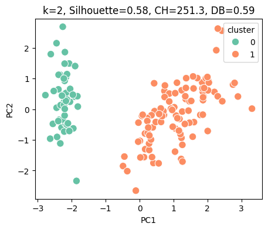
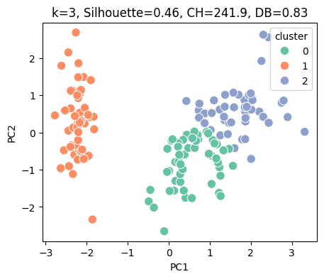
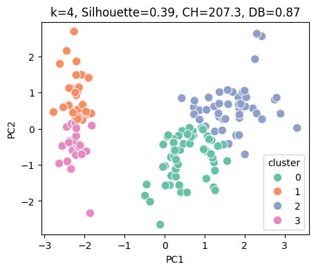
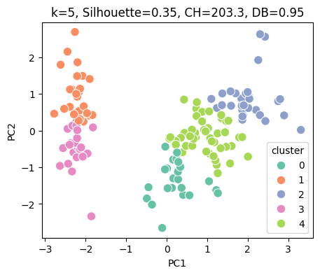
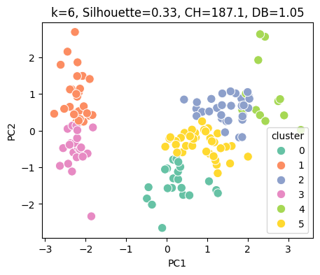
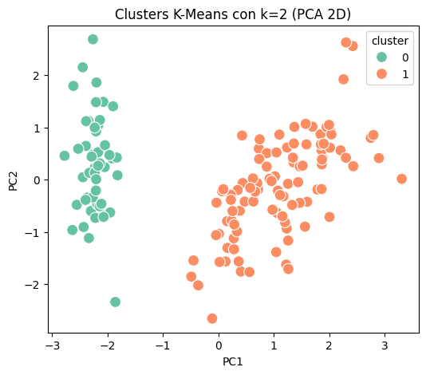
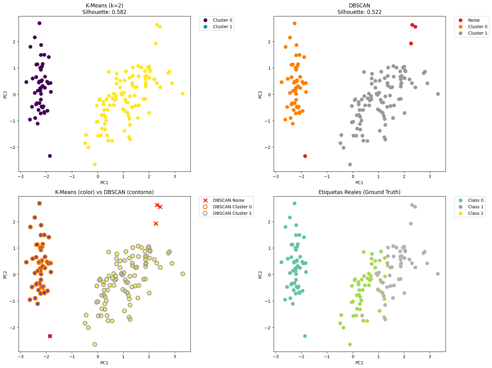

8. Clustering#
8.1. K-Means#
Introducción
El método K-Means pertenece al aprendizaje no supervisado, ya que no dispone de una variable objetivo \(y\). Su propósito no es predecir etiquetas, sino descubrir estructuras ocultas agrupando los datos según su proximidad en el espacio.
A diferencia de los modelos supervisados, los grupos (clústeres) se determinan únicamente a partir de las características \(x_j\). Ignora \(y\) completamente, porque su objetivo es descubrir patrones “naturales” en los datos.
Sea un conjunto de datos
\[ \mathcal{X} = \{x_1, x_2, \dots, x_n\}, \qquad x_j \in \mathbb{R}^d, \]el método K-Means busca particionar los datos en \(k\) subconjuntos disjuntos
\[ \{C_1, C_2, \dots, C_k\}, \]minimizando la suma total de distancias cuadradas a los centroides:
\[ J(\{\mu_i\}, \{C_i\}) = \sum_{i=1}^{k} \sum_{x_j \in C_i} \|x_j - \mu_i\|^2, \]donde \(\mu_i \in \mathbb{R}^d\) es el centroide del clúster \(C_i\), definido como
\[ \mu_i = \frac{1}{|C_i|} \sum_{x_j \in C_i} x_j, \]y \(\|\cdot\|\) denota la norma euclidiana.
Notación alternativa por índices. De manera equivalente, se puede expresar la función objetivo en términos de los índices de los puntos pertenecientes a cada clúster. Sea
\[ \mathcal{I}_i = \{\, j \in \{1,\dots,n\} : x_j \in C_i \,\}, \]entonces
\[ J(\{\mu_i\}, \{C_i\}) = \sum_{i=1}^{k} \sum_{j \in \mathcal{I}_i} \|x_j - \mu_i\|^2, \qquad \mu_i = \frac{1}{|\mathcal{I}_i|} \sum_{j \in \mathcal{I}_i} x_j. \]Derivación del centroide óptimo. Para un conjunto fijo de asignaciones \(\{C_i\}\) (o, equivalentemente, \(\{\mathcal{I}_i\}\)), buscamos el valor de \(\mu_i\) que minimiza la función objetivo parcial
\[ J_i = \sum_{x_j \in C_i} \|x_j - \mu_i\|^2 = \sum_{j \in \mathcal{I}_i} \|x_j - \mu_i\|^2. \]Expandiendo el cuadrado de la norma euclidiana
\[ J_i = \sum_{j \in \mathcal{I}_i} (x_j - \mu_i)^\top (x_j - \mu_i) = \sum_{j \in \mathcal{I}_i} \bigl(x_j^\top x_j - 2\,x_j^\top \mu_i + \mu_i^\top \mu_i\bigr). \]Derivando con respecto a \(\mu_i\) y usando cálculo vectorial
\[ \frac{\partial J_i}{\partial \mu_i} = -2 \sum_{j \in \mathcal{I}_i} x_j + 2\,|\mathcal{I}_i|\,\mu_i. \]Igualando a cero para la condición de optimalidad
\[ |\mathcal{I}_i|\,\mu_i = \sum_{j \in \mathcal{I}_i} x_j \quad\Longrightarrow\quad \boxed{\;\mu_i = \frac{1}{|\mathcal{I}_i|} \sum_{j \in \mathcal{I}_i} x_j\;} \]Por tanto, el centroide óptimo es la media aritmética de los puntos asignados al clúster.
El algoritmo de K-Means alterna entre dos pasos fundamentales
Asignación de clústeres (etapa de clasificación): Cada punto \(x_j\) se asigna al clúster más cercano según la distancia euclidiana a los centroides actuales (por ejemplo, \(k\) puntos aleatorios del conjunto de datos o usando
init='k-means++', n_init=10)\[ C_i^{(t)} = { x_j : |x_j - \mu_i^{(t)}|^2 \le |x_j - \mu_\ell^{(t)}|^2, \ \forall \ell \in {1, \dots, k} }. \]Actualización de centroides (etapa de optimización): Cada centroide se actualiza como la media de los puntos asignados:
\[ \mu_i^{(t+1)} = \frac{1}{|C_i^{(t)}|} \sum_{x_j \in C_i^{(t)}} x_j. \]
Theorem 8.1 (Monotonía decreciente de la función objetivo)
Sea la función objetivo
El algoritmo de Lloyd garantiza que
\[ J^{(t+1)} \le J^{(t)} \quad \forall t, \]y por tanto, la secuencia \({J^{(t)}}\) es monótonamente decreciente y converge a un mínimo local (no necesariamente global).
Demostración
El algoritmo alterna entre dos subproblemas de optimización, cada uno de los cuales minimiza \(J\) con respecto a un conjunto de variables mientras mantiene el otro fijo.
Paso de asignación: Minimización respecto a \({C_i}\)
Para centroides fijos \({\mu_i^{(t)}}\), cada punto \(x_j\) se asigna al clúster cuyo centroide está más cercano, es decir
Por construcción, este paso minimiza \(J\) con respecto a las asignaciones, ya que elige para cada \(x_j\) la distancia cuadrática mínima posible. Por tanto,
Paso de actualización: Minimización respecto a \({\mu_i}\)
Para asignaciones fijas \({C_i^{(t)}}\), cada \(\mu_i\) se calcula como
De la derivación previa, sabemos que el mínimo se alcanza en la media aritmética
Por tanto, este paso también reduce (o deja constante) la función objetivo
Conclusión. Combinando ambos pasos
Así, se cumple la monotonía decreciente:
Dado que \(J \ge 0\), la secuencia \({J^{(t)}}\) está acotada inferiormente y es monótonamente decreciente, por lo que converge a un valor límite \(J^*\).
Observaciones
La convergencia es en un número finito de pasos, porque el número de posibles particiones \({C_i}\) es finito.
Sin embargo, el algoritmo puede converger a un mínimo local de \(J\), no necesariamente al óptimo global.
Por ello, en la práctica se recomienda ejecutar K-Means con múltiples inicializaciones aleatorias o usar K-Means++ para mejorar la calidad del mínimo alcanzado.
Corollary 8.1
Donde “estable” significa que las asignaciones \({C_i}\) y los centroides \({\mu_i}\) ya no cambian entre iteraciones consecutivas.
8.2. Selección automática de (\(k\))#
Cuando se busca automatizar la selección del número de clusters (\(k\)) para un algoritmo como K-Means, es fundamental usar métodos cuantitativos y reproducibles, evitando la inspección visual (como el “codo”) que no es práctica para producción.
Antes de elegir (\(k\)), podemos cuantificar la calidad de los clusters usando métricas internas que no dependen de etiquetas externas
Silhouette Score Silhouette Score mide si cada punto está más cerca de su propio cluster que de otros. Valores cerca de 1 → bien asignado; 0 → en la frontera; negativos → mal asignado. Se promedia para todos los puntos y se elige el (\(k\)) que maximice este promedio
\[ s(i) = \frac{b(i) - a(i)}{\max(a(i), b(i))} \]\(a(i)\) = distancia promedio del \(i\)-ésimo punto a los puntos de su propio cluster
\(b(i)\) = mínima distancia promedio del \(i\)-ésimo punto a puntos de otro cluster
\(s(i) \in [-1,1]\): valores altos indican buena asignación
Para un (\(k\)) dado, se promedia:
\[ S(k) = \frac{1}{n} \sum_{i=1}^{n} s(i) \]Elegimos (\(k\)) que maximice \(S(k)\).
Calinski-Harabasz (CH). El índice Calinski-Harabasz (CH) cuantifica la calidad de los clusters midiendo qué tan separados están entre sí y qué tan compactos son internamente. Para seleccionar \(k\) usando Calinski-Harabasz (CH), calculas el índice para varios valores de \(k\) y eliges aquel que maximice CH, ya que un valor más alto indica clusters más separados y compactos (mejor agrupación)
\[ CH(k) = \frac{\text{tr}(B_k)/(k-1)}{\text{tr}(W_k)/(n-k)} \]\(B_k\) = dispersión entre clusters
\(W_k\) = dispersión dentro de clusters
Mayor \(CH\) → clusters más separados y compactos
Davies-Bouldin (DB). El índice Davies-Bouldin (DB) mide la similitud entre clusters, combinando su dispersión interna y la distancia entre ellos. Para seleccionar (\(k\)) usando DB, calculas el índice para varios valores de (\(k\)) y eliges aquel que minimice DB, ya que un valor más bajo indica clusters más separados y compactos
\[ DB(k) = \frac{1}{k} \sum_{i=1}^{k} \max_{j \neq i} \frac{\sigma_i + \sigma_j}{d(c_i, c_j)} \]\(\sigma_i\) = desviación media del cluster \(i\)
\(d(c_i, c_j)\) = distancia entre centroides
Menor \(DB\) → mejor separación y compactación
8.3. Reporte de métricas internas para K-Means#
Cuán deseamos verificar el rendimiento de nuestras técnicas de clustering, se suelen reportar métricas internas de calidad de clusters que sean reproducibles. *No se hace cross-Validation como en supervisado, ya que no hay etiquetas externas+
Qué mostrar en la tabla
Número de clusters (\(k\)): seleccionado automáticamente.
Silhouette Score (S): qué tan bien asignados están los puntos.
Calinski-Harabasz (CH): mayor → clusters más compactos y separados.
Davies-Bouldin (DB): menor → mejor separación y compactación.
Opcional: tamaño de cada cluster, para mostrar balance si el dataset es grande.
\(k\)
Silhouette
CH Score
DB Score
Cluster Sizes
3
0.62
450.3
0.48
[50, 45, 55]
Cada fila corresponde a un valor de \(k\) probado. En producción, se reporta normalmente solo el \(k\) óptimo, pero se pueden incluir comparaciones si es para un informe. No se necesita cross-validation: estas métricas son inherentes a los clusters y no dependen de etiquetas externas.
Cuando haces clustering con K-Means (u otra metodología), cada observación queda asignada a un cluster mediante un vector de etiquetas. Puedes añadirlo fácilmente a tu
DataFramede pandas para identificar a qué cluster pertenece cada fila*.
8.4. Ejemplo: Iris dataset#
En este ejemplo usamos el dataset Iris (libre y ampliamente usado en ejemplos de clustering). Aplicaremos K-Means, seleccionaremos automáticamente el número óptimo de clusters, calcularemos métricas internas, y añadiremos las etiquetas de cluster al DataFrame.
Procedimiento
Normalización: escalamos las variables para que tengan media 0 y desviación 1, evitando que variables con diferente escala dominen la distancia euclidiana.
Selección automática de (k):
Calculamos Silhouette, Calinski-Harabasz y Davies-Bouldin para varios valores de (k).
Elegimos (k) que maximice Silhouette (u otra métrica de tu preferencia).
Ajuste final de K-Means:
Con el (k) seleccionado, entrenamos K-Means y obtenemos las etiquetas de cluster para cada observación.
Añadimos estas etiquetas al DataFrame para identificar cada fila.
Reporte de métricas y tamaños de cluster:
Creamos una tabla con métricas internas y mostramos el tamaño de cada cluster.
Visualización con PCA:
Reducimos dimensionalidad a 2D con PCA para ver los clusters en un gráfico.
Esto no afecta el clustering, solo es para visualización interpretativa.
import pandas as pd
import numpy as np
from sklearn.datasets import load_iris
from sklearn.preprocessing import StandardScaler
from sklearn.cluster import KMeans
from sklearn.metrics import silhouette_score, calinski_harabasz_score, davies_bouldin_score
from sklearn.decomposition import PCA
import matplotlib.pyplot as plt
import seaborn as sns
# --- Cargar datos ---
iris = load_iris()
X = iris.data
feature_names = iris.feature_names
X_df = pd.DataFrame(X, columns=feature_names)
# --- Normalización ---
Xs = StandardScaler().fit_transform(X)
# --- Evaluar múltiples k y guardar métricas ---
k_min, k_max = 2, 6
resultados = []
for k in range(k_min, k_max+1):
km = KMeans(
n_clusters=k,
init='k-means++',
n_init=20,
random_state=0
)
labels = km.fit_predict(Xs)
sil = silhouette_score(Xs, labels)
ch = calinski_harabasz_score(Xs, labels)
db = davies_bouldin_score(Xs, labels)
resultados.append({'k': k, 'Silhouette': sil, 'CH': ch, 'DB': db})
# --- PCA para visualización ---
pca = PCA(n_components=2)
X_pca = pca.fit_transform(Xs)
X_vis = pd.DataFrame(X_pca, columns=['PC1', 'PC2'])
X_vis['cluster'] = labels
plt.figure(figsize=(5,4))
sns.scatterplot(x='PC1', y='PC2', hue='cluster', data=X_vis, palette='Set2', s=80)
plt.title(f'k={k}, Silhouette={sil:.2f}, CH={ch:.1f}, DB={db:.2f}')
plt.show()
# --- Crear DataFrame de métricas ---
res_df = pd.DataFrame(resultados)
# --- Resaltar mejor k según Silhouette ---
k_opt_idx = res_df['Silhouette'].idxmax()
res_df_style = res_df.style.apply(
lambda x: ['background-color: lightgreen' if x.name == k_opt_idx else '' for _ in x],
axis=1
)
print("Tabla de métricas para cada k (mejor k resaltado):")
display(res_df_style)
# --- Elegir k óptimo según Silhouette ---
k_opt = res_df.loc[k_opt_idx, 'k']
print(f"\nK óptimo según Silhouette: {k_opt}")
# --- Ajuste final de K-Means ---
km_final = KMeans(
n_clusters=k_opt,
init='k-means++',
n_init=20,
random_state=0
)
labels_final = km_final.fit_predict(Xs)
X_df['cluster'] = labels_final # etiquetas de cluster en el DataFrame original
# --- Resaltar columna cluster usando Styler.map ---
X_df_style = X_df.style.map(lambda x: 'background-color: lightblue', subset=['cluster'])
# --- Tamaño de cada cluster ---
print("Tamaño de cada cluster:", X_df['cluster'].value_counts().to_dict())
# --- PCA para visualización final ---
pca = PCA(n_components=2)
X_pca = pca.fit_transform(Xs)
X_df['PC1'] = X_pca[:,0]
X_df['PC2'] = X_pca[:,1]
plt.figure(figsize=(6,5))
sns.scatterplot(x='PC1', y='PC2', hue='cluster', data=X_df, palette='Set2', s=100)
plt.title(f'Clusters K-Means con k={k_opt} (PCA 2D)')
plt.show()
# --- Mostrar DataFrame final con clusters resaltando columna ---
print("\nDataFrame con clusters y PCA (columna cluster resaltada):")
X_df_style





Tabla de métricas para cada k (mejor k resaltado):
| k | Silhouette | CH | DB | |
|---|---|---|---|---|
| 0 | 2 | 0.581750 | 251.349339 | 0.593313 |
| 1 | 3 | 0.459948 | 241.904402 | 0.833595 |
| 2 | 4 | 0.386941 | 207.265914 | 0.869814 |
| 3 | 5 | 0.345511 | 203.267419 | 0.945173 |
| 4 | 6 | 0.325677 | 187.139278 | 1.051857 |
K óptimo según Silhouette: 2
Tamaño de cada cluster: {1: 100, 0: 50}

DataFrame con clusters y PCA (columna cluster resaltada):
| sepal length (cm) | sepal width (cm) | petal length (cm) | petal width (cm) | cluster | PC1 | PC2 | |
|---|---|---|---|---|---|---|---|
| 0 | 5.100000 | 3.500000 | 1.400000 | 0.200000 | 0 | -2.264703 | 0.480027 |
| 1 | 4.900000 | 3.000000 | 1.400000 | 0.200000 | 0 | -2.080961 | -0.674134 |
| 2 | 4.700000 | 3.200000 | 1.300000 | 0.200000 | 0 | -2.364229 | -0.341908 |
| 3 | 4.600000 | 3.100000 | 1.500000 | 0.200000 | 0 | -2.299384 | -0.597395 |
| 4 | 5.000000 | 3.600000 | 1.400000 | 0.200000 | 0 | -2.389842 | 0.646835 |
| 5 | 5.400000 | 3.900000 | 1.700000 | 0.400000 | 0 | -2.075631 | 1.489178 |
| 6 | 4.600000 | 3.400000 | 1.400000 | 0.300000 | 0 | -2.444029 | 0.047644 |
| 7 | 5.000000 | 3.400000 | 1.500000 | 0.200000 | 0 | -2.232847 | 0.223148 |
| 8 | 4.400000 | 2.900000 | 1.400000 | 0.200000 | 0 | -2.334640 | -1.115328 |
| 9 | 4.900000 | 3.100000 | 1.500000 | 0.100000 | 0 | -2.184328 | -0.469014 |
| 10 | 5.400000 | 3.700000 | 1.500000 | 0.200000 | 0 | -2.166310 | 1.043691 |
| 11 | 4.800000 | 3.400000 | 1.600000 | 0.200000 | 0 | -2.326131 | 0.133078 |
| 12 | 4.800000 | 3.000000 | 1.400000 | 0.100000 | 0 | -2.218451 | -0.728676 |
| 13 | 4.300000 | 3.000000 | 1.100000 | 0.100000 | 0 | -2.633101 | -0.961507 |
| 14 | 5.800000 | 4.000000 | 1.200000 | 0.200000 | 0 | -2.198741 | 1.860057 |
| 15 | 5.700000 | 4.400000 | 1.500000 | 0.400000 | 0 | -2.262215 | 2.686284 |
| 16 | 5.400000 | 3.900000 | 1.300000 | 0.400000 | 0 | -2.207588 | 1.483609 |
| 17 | 5.100000 | 3.500000 | 1.400000 | 0.300000 | 0 | -2.190350 | 0.488838 |
| 18 | 5.700000 | 3.800000 | 1.700000 | 0.300000 | 0 | -1.898572 | 1.405019 |
| 19 | 5.100000 | 3.800000 | 1.500000 | 0.300000 | 0 | -2.343369 | 1.127849 |
| 20 | 5.400000 | 3.400000 | 1.700000 | 0.200000 | 0 | -1.914323 | 0.408856 |
| 21 | 5.100000 | 3.700000 | 1.500000 | 0.400000 | 0 | -2.207013 | 0.924121 |
| 22 | 4.600000 | 3.600000 | 1.000000 | 0.200000 | 0 | -2.774345 | 0.458344 |
| 23 | 5.100000 | 3.300000 | 1.700000 | 0.500000 | 0 | -1.818670 | 0.085559 |
| 24 | 4.800000 | 3.400000 | 1.900000 | 0.200000 | 0 | -2.227163 | 0.137254 |
| 25 | 5.000000 | 3.000000 | 1.600000 | 0.200000 | 0 | -1.951846 | -0.625619 |
| 26 | 5.000000 | 3.400000 | 1.600000 | 0.400000 | 0 | -2.051151 | 0.242164 |
| 27 | 5.200000 | 3.500000 | 1.500000 | 0.200000 | 0 | -2.168577 | 0.527150 |
| 28 | 5.200000 | 3.400000 | 1.400000 | 0.200000 | 0 | -2.139563 | 0.313218 |
| 29 | 4.700000 | 3.200000 | 1.600000 | 0.200000 | 0 | -2.265261 | -0.337732 |
| 30 | 4.800000 | 3.100000 | 1.600000 | 0.200000 | 0 | -2.140122 | -0.504541 |
| 31 | 5.400000 | 3.400000 | 1.500000 | 0.400000 | 0 | -1.831595 | 0.423695 |
| 32 | 5.200000 | 4.100000 | 1.500000 | 0.100000 | 0 | -2.614948 | 1.793576 |
| 33 | 5.500000 | 4.200000 | 1.400000 | 0.200000 | 0 | -2.446177 | 2.150728 |
| 34 | 4.900000 | 3.100000 | 1.500000 | 0.200000 | 0 | -2.109975 | -0.460202 |
| 35 | 5.000000 | 3.200000 | 1.200000 | 0.200000 | 0 | -2.207809 | -0.206107 |
| 36 | 5.500000 | 3.500000 | 1.300000 | 0.200000 | 0 | -2.045146 | 0.661558 |
| 37 | 4.900000 | 3.600000 | 1.400000 | 0.100000 | 0 | -2.527332 | 0.592293 |
| 38 | 4.400000 | 3.000000 | 1.300000 | 0.200000 | 0 | -2.429633 | -0.904180 |
| 39 | 5.100000 | 3.400000 | 1.500000 | 0.200000 | 0 | -2.169711 | 0.268879 |
| 40 | 5.000000 | 3.500000 | 1.300000 | 0.300000 | 0 | -2.286475 | 0.441715 |
| 41 | 4.500000 | 2.300000 | 1.300000 | 0.300000 | 0 | -1.858122 | -2.337415 |
| 42 | 4.400000 | 3.200000 | 1.300000 | 0.200000 | 0 | -2.553638 | -0.479101 |
| 43 | 5.000000 | 3.500000 | 1.600000 | 0.600000 | 0 | -1.964448 | 0.472327 |
| 44 | 5.100000 | 3.800000 | 1.900000 | 0.400000 | 0 | -2.137059 | 1.142229 |
| 45 | 4.800000 | 3.000000 | 1.400000 | 0.300000 | 0 | -2.069744 | -0.711053 |
| 46 | 5.100000 | 3.800000 | 1.600000 | 0.200000 | 0 | -2.384733 | 1.120430 |
| 47 | 4.600000 | 3.200000 | 1.400000 | 0.200000 | 0 | -2.394376 | -0.386247 |
| 48 | 5.300000 | 3.700000 | 1.500000 | 0.200000 | 0 | -2.229447 | 0.997960 |
| 49 | 5.000000 | 3.300000 | 1.400000 | 0.200000 | 0 | -2.203833 | 0.009216 |
| 50 | 7.000000 | 3.200000 | 4.700000 | 1.400000 | 1 | 1.101781 | 0.862972 |
| 51 | 6.400000 | 3.200000 | 4.500000 | 1.500000 | 1 | 0.731337 | 0.594615 |
| 52 | 6.900000 | 3.100000 | 4.900000 | 1.500000 | 1 | 1.240979 | 0.616298 |
| 53 | 5.500000 | 2.300000 | 4.000000 | 1.300000 | 1 | 0.407483 | -1.754404 |
| 54 | 6.500000 | 2.800000 | 4.600000 | 1.500000 | 1 | 1.075475 | -0.208421 |
| 55 | 5.700000 | 2.800000 | 4.500000 | 1.300000 | 1 | 0.388687 | -0.593284 |
| 56 | 6.300000 | 3.300000 | 4.700000 | 1.600000 | 1 | 0.746530 | 0.773019 |
| 57 | 4.900000 | 2.400000 | 3.300000 | 1.000000 | 1 | -0.487323 | -1.852429 |
| 58 | 6.600000 | 2.900000 | 4.600000 | 1.300000 | 1 | 0.927902 | 0.032226 |
| 59 | 5.200000 | 2.700000 | 3.900000 | 1.400000 | 1 | 0.011426 | -1.034018 |
| 60 | 5.000000 | 2.000000 | 3.500000 | 1.000000 | 1 | -0.110196 | -2.654073 |
| 61 | 5.900000 | 3.000000 | 4.200000 | 1.500000 | 1 | 0.440693 | -0.063295 |
| 62 | 6.000000 | 2.200000 | 4.000000 | 1.000000 | 1 | 0.562108 | -1.764724 |
| 63 | 6.100000 | 2.900000 | 4.700000 | 1.400000 | 1 | 0.719562 | -0.186225 |
| 64 | 5.600000 | 2.900000 | 3.600000 | 1.300000 | 1 | -0.033355 | -0.439003 |
| 65 | 6.700000 | 3.100000 | 4.400000 | 1.400000 | 1 | 0.875407 | 0.509064 |
| 66 | 5.600000 | 3.000000 | 4.500000 | 1.500000 | 1 | 0.350252 | -0.196312 |
| 67 | 5.800000 | 2.700000 | 4.100000 | 1.000000 | 1 | 0.158810 | -0.792096 |
| 68 | 6.200000 | 2.200000 | 4.500000 | 1.500000 | 1 | 1.225094 | -1.622244 |
| 69 | 5.600000 | 2.500000 | 3.900000 | 1.100000 | 1 | 0.164918 | -1.302609 |
| 70 | 5.900000 | 3.200000 | 4.800000 | 1.800000 | 1 | 0.737683 | 0.396572 |
| 71 | 6.100000 | 2.800000 | 4.000000 | 1.300000 | 1 | 0.476287 | -0.417320 |
| 72 | 6.300000 | 2.500000 | 4.900000 | 1.500000 | 1 | 1.234178 | -0.933326 |
| 73 | 6.100000 | 2.800000 | 4.700000 | 1.200000 | 1 | 0.632858 | -0.416388 |
| 74 | 6.400000 | 2.900000 | 4.300000 | 1.300000 | 1 | 0.702661 | -0.063412 |
| 75 | 6.600000 | 3.000000 | 4.400000 | 1.400000 | 1 | 0.874274 | 0.250793 |
| 76 | 6.800000 | 2.800000 | 4.800000 | 1.400000 | 1 | 1.256509 | -0.077256 |
| 77 | 6.700000 | 3.000000 | 5.000000 | 1.700000 | 1 | 1.358405 | 0.331312 |
| 78 | 6.000000 | 2.900000 | 4.500000 | 1.500000 | 1 | 0.664800 | -0.225928 |
| 79 | 5.700000 | 2.600000 | 3.500000 | 1.000000 | 1 | -0.040259 | -1.058719 |
| 80 | 5.500000 | 2.400000 | 3.800000 | 1.100000 | 1 | 0.130795 | -1.562272 |
| 81 | 5.500000 | 2.400000 | 3.700000 | 1.000000 | 1 | 0.023453 | -1.572476 |
| 82 | 5.800000 | 2.700000 | 3.900000 | 1.200000 | 1 | 0.241538 | -0.777256 |
| 83 | 6.000000 | 2.700000 | 5.100000 | 1.600000 | 1 | 1.061095 | -0.633843 |
| 84 | 5.400000 | 3.000000 | 4.500000 | 1.500000 | 1 | 0.223979 | -0.287774 |
| 85 | 6.000000 | 3.400000 | 4.500000 | 1.600000 | 1 | 0.429139 | 0.845582 |
| 86 | 6.700000 | 3.100000 | 4.700000 | 1.500000 | 1 | 1.048728 | 0.522052 |
| 87 | 6.300000 | 2.300000 | 4.400000 | 1.300000 | 1 | 1.044531 | -1.382989 |
| 88 | 5.600000 | 3.000000 | 4.100000 | 1.300000 | 1 | 0.069588 | -0.219503 |
| 89 | 5.500000 | 2.500000 | 4.000000 | 1.300000 | 1 | 0.283477 | -1.329325 |
| 90 | 5.500000 | 2.600000 | 4.400000 | 1.200000 | 1 | 0.279078 | -1.120029 |
| 91 | 6.100000 | 3.000000 | 4.600000 | 1.400000 | 1 | 0.624570 | 0.024923 |
| 92 | 5.800000 | 2.600000 | 4.000000 | 1.200000 | 1 | 0.336530 | -0.988404 |
| 93 | 5.000000 | 2.300000 | 3.300000 | 1.000000 | 1 | -0.362183 | -2.019238 |
| 94 | 5.600000 | 2.700000 | 4.200000 | 1.300000 | 1 | 0.288586 | -0.855730 |
| 95 | 5.700000 | 3.000000 | 4.200000 | 1.200000 | 1 | 0.091361 | -0.181192 |
| 96 | 5.700000 | 2.900000 | 4.200000 | 1.300000 | 1 | 0.227717 | -0.384920 |
| 97 | 6.200000 | 2.900000 | 4.300000 | 1.300000 | 1 | 0.576388 | -0.154874 |
| 98 | 5.100000 | 2.500000 | 3.000000 | 1.100000 | 1 | -0.447667 | -1.543792 |
| 99 | 5.700000 | 2.800000 | 4.100000 | 1.300000 | 1 | 0.256731 | -0.598852 |
| 100 | 6.300000 | 3.300000 | 6.000000 | 2.500000 | 1 | 1.844569 | 0.870421 |
| 101 | 5.800000 | 2.700000 | 5.100000 | 1.900000 | 1 | 1.157882 | -0.698870 |
| 102 | 7.100000 | 3.000000 | 5.900000 | 2.100000 | 1 | 2.205267 | 0.562010 |
| 103 | 6.300000 | 2.900000 | 5.600000 | 1.800000 | 1 | 1.440151 | -0.046988 |
| 104 | 6.500000 | 3.000000 | 5.800000 | 2.200000 | 1 | 1.867812 | 0.295045 |
| 105 | 7.600000 | 3.000000 | 6.600000 | 2.100000 | 1 | 2.751873 | 0.800409 |
| 106 | 4.900000 | 2.500000 | 4.500000 | 1.700000 | 1 | 0.367018 | -1.561503 |
| 107 | 7.300000 | 2.900000 | 6.300000 | 1.800000 | 1 | 2.302439 | 0.420066 |
| 108 | 6.700000 | 2.500000 | 5.800000 | 1.800000 | 1 | 2.006686 | -0.711439 |
| 109 | 7.200000 | 3.600000 | 6.100000 | 2.500000 | 1 | 2.259777 | 1.921010 |
| 110 | 6.500000 | 3.200000 | 5.100000 | 2.000000 | 1 | 1.364175 | 0.692756 |
| 111 | 6.400000 | 2.700000 | 5.300000 | 1.900000 | 1 | 1.602679 | -0.421700 |
| 112 | 6.800000 | 3.000000 | 5.500000 | 2.100000 | 1 | 1.883901 | 0.419250 |
| 113 | 5.700000 | 2.500000 | 5.000000 | 2.000000 | 1 | 1.260115 | -1.162260 |
| 114 | 5.800000 | 2.800000 | 5.100000 | 2.400000 | 1 | 1.467645 | -0.442272 |
| 115 | 6.400000 | 3.200000 | 5.300000 | 2.300000 | 1 | 1.590077 | 0.676245 |
| 116 | 6.500000 | 3.000000 | 5.500000 | 1.800000 | 1 | 1.471431 | 0.255622 |
| 117 | 7.700000 | 3.800000 | 6.700000 | 2.200000 | 1 | 2.426329 | 2.556661 |
| 118 | 7.700000 | 2.600000 | 6.900000 | 2.300000 | 1 | 3.310696 | 0.017781 |
| 119 | 6.000000 | 2.200000 | 5.000000 | 1.500000 | 1 | 1.263767 | -1.706745 |
| 120 | 6.900000 | 3.200000 | 5.700000 | 2.300000 | 1 | 2.037716 | 0.910467 |
| 121 | 5.600000 | 2.800000 | 4.900000 | 2.000000 | 1 | 0.977981 | -0.571764 |
| 122 | 7.700000 | 2.800000 | 6.700000 | 2.000000 | 1 | 2.897651 | 0.413641 |
| 123 | 6.300000 | 2.700000 | 4.900000 | 1.800000 | 1 | 1.333232 | -0.481811 |
| 124 | 6.700000 | 3.300000 | 5.700000 | 2.100000 | 1 | 1.700734 | 1.013922 |
| 125 | 7.200000 | 3.200000 | 6.000000 | 1.800000 | 1 | 1.954327 | 1.007778 |
| 126 | 6.200000 | 2.800000 | 4.800000 | 1.800000 | 1 | 1.175104 | -0.316394 |
| 127 | 6.100000 | 3.000000 | 4.900000 | 1.800000 | 1 | 1.020951 | 0.064346 |
| 128 | 6.400000 | 2.800000 | 5.600000 | 2.100000 | 1 | 1.788350 | -0.187361 |
| 129 | 7.200000 | 3.000000 | 5.800000 | 1.600000 | 1 | 1.863648 | 0.562291 |
| 130 | 7.400000 | 2.800000 | 6.100000 | 1.900000 | 1 | 2.435954 | 0.259284 |
| 131 | 7.900000 | 3.800000 | 6.400000 | 2.000000 | 1 | 2.304928 | 2.626323 |
| 132 | 6.400000 | 2.800000 | 5.600000 | 2.200000 | 1 | 1.862703 | -0.178549 |
| 133 | 6.300000 | 2.800000 | 5.100000 | 1.500000 | 1 | 1.114148 | -0.292923 |
| 134 | 6.100000 | 2.600000 | 5.600000 | 1.400000 | 1 | 1.202473 | -0.811315 |
| 135 | 7.700000 | 3.000000 | 6.100000 | 2.300000 | 1 | 2.798770 | 0.856803 |
| 136 | 6.300000 | 3.400000 | 5.600000 | 2.400000 | 1 | 1.576256 | 1.068581 |
| 137 | 6.400000 | 3.100000 | 5.500000 | 1.800000 | 1 | 1.346292 | 0.422431 |
| 138 | 6.000000 | 3.000000 | 4.800000 | 1.800000 | 1 | 0.924825 | 0.017223 |
| 139 | 6.900000 | 3.100000 | 5.400000 | 2.100000 | 1 | 1.852045 | 0.676128 |
| 140 | 6.700000 | 3.100000 | 5.600000 | 2.400000 | 1 | 2.014810 | 0.613886 |
| 141 | 6.900000 | 3.100000 | 5.100000 | 2.300000 | 1 | 1.901784 | 0.689575 |
| 142 | 5.800000 | 2.700000 | 5.100000 | 1.900000 | 1 | 1.157882 | -0.698870 |
| 143 | 6.800000 | 3.200000 | 5.900000 | 2.300000 | 1 | 2.040558 | 0.867521 |
| 144 | 6.700000 | 3.300000 | 5.700000 | 2.500000 | 1 | 1.998147 | 1.049169 |
| 145 | 6.700000 | 3.000000 | 5.200000 | 2.300000 | 1 | 1.870503 | 0.386966 |
| 146 | 6.300000 | 2.500000 | 5.000000 | 1.900000 | 1 | 1.564580 | -0.896687 |
| 147 | 6.500000 | 3.000000 | 5.200000 | 2.000000 | 1 | 1.521170 | 0.269069 |
| 148 | 6.200000 | 3.400000 | 5.400000 | 2.300000 | 1 | 1.372788 | 1.011254 |
| 149 | 5.900000 | 3.000000 | 5.100000 | 1.800000 | 1 | 0.960656 | -0.024332 |
Observación
¿Por qué \(k=3\) no es bueno? En el dataset Iris, Versicolor y Virginica se superponen parcialmente; K-Means, que asume clusters esféricos y separados, fuerza divisiones pobres al usar \(k=3\), generando clusters menos compactos y con puntos mal asignados (Silhouette baja, DB alta). Para seleccionar \(k\), la Silhouette Score se usa como métrica principal, ya que refleja cohesión y separación; CH y DB son métricas complementarias para confirmar la elección.
8.5. DBSCAN#
Introducción
DBSCAN es un algoritmo de clustering basado en densidad que identifica clusters de forma arbitraria y detecta ruido sin requerir un número de clusters predefinido.
Se forma un cluster como una región donde la densidad de puntos excede un umbral local definido por \(\epsilon\) y \(\text{min_samples}\), mientras los puntos aislados se consideran ruido [Ester et al., 1996].
Este enfoque permite manejar clusters no esféricos y datos con outliers, a diferencia de métodos como K-Means [Kriegel et al., 2011].
K-Means intenta minimizar la distancia euclidiana al centroide, por lo que funciona mejor si los clusters son aproximadamente esferas en el espacio de características, es decir, regiones compactas y más o menos redondas.
Si los clusters tienen formas elongadas, concéntricas o arbitrarias, K-Means puede dividir un cluster real en varios o mezclar clusters, porque su modelo solo “ve” centros y radios.
Sea un conjunto de datos
\[ \mathcal{X} = {x_1, x_2, \dots, x_n}, \quad x_i \in \mathbb{R}^d. \]DBSCAN define clusters basándose en densidad local, en lugar de asumir forma de los clusters como en K-Means [Ester et al., 1996].
Parámetros principales
\(\epsilon > 0\) : radio de vecindad.
\(\mathrm{min\_samples} \in \mathbb{N}\): número mínimo de puntos para considerar un núcleo.
Vecindad \(\epsilon\) y densidad
La vecindad \(\epsilon\) de un punto \(x_i\) se define como
\[ N_\epsilon(x_i) = { x_j \in \mathcal{X} \mid \|x_j - x_i\| \le \epsilon }. \]Un punto se clasifica según
Punto núcleo. Un punto núcleo es aquel que tiene suficientes vecinos dentro de un radio \(\epsilon\). Formalmente
\[ x_i \text{ es núcleo} \iff |N_\epsilon(x_i)| \ge \mathrm{min\_samples}. \]Punto frontera. Un punto \(x_i\) es frontera si cumple dos condiciones
No tiene suficientes vecinos para ser núcleo:
\[ |N_\epsilon(x_i)| < \mathrm{min\_samples} \]Está “cerca” de un punto núcleo:
Existe algún \(x_j\) que sí es núcleo y tal que \(x_i\) está dentro de su vecindad:
\[ x_i \in N_\epsilon(x_j) \]Ruido:
\[ x_i \text{ es ruido} \iff x_i \text{ no es núcleo ni frontera.} \]
Densidad alcanzable. Dos puntos \(x_i\) y \(x_j\) son directamente densidad alcanzables si
\(x_i\) es un punto núcleo (tiene suficiente densidad a su alrededor).
\(x_j\) está dentro de la vecindad de \(x_i\):
\[ x_j \in N_\epsilon(x_i) \]Esto es, \(x_i\) puede “alcanzar” directamente a \(x_j\) porque \(x_i\) es denso y \(x_j\) está cerca.
Definición: \(x_j\) es densidad alcanzable desde \(x_i\) si existe una cadena de puntos núcleo
\[ x_i = p_0, p_1, p_2, \dots, p_m = x_j \]donde cada \(p_{k+1}\) es directamente alcanzable desde \(p_k\).
Es decir, no necesitas estar directamente cerca de un núcleo. Basta con poder “caminar” de núcleo a núcleo hasta llegar a \(x_j\).
Cluster DBSCAN:
\[ C = \{ x \in \mathcal{X} \mid x \text{ es densidad conectable con algún núcleo } x_k \}. \]Propiedades importantes
No requiere número de clusters \(k\): los clusters se forman según densidad, no por partición fija.
Clusters de forma arbitraria: no se asume geometría específica (no es esférico).
Detección de ruido: los puntos no densamente conectados se etiquetan como ruido.
Sensibilidad a parámetros:
\(\epsilon\) demasiado grande → todos los puntos en un solo cluster.
\(\epsilon\) demasiado pequeño → muchos puntos como ruido.
Escala de datos afecta la distancia euclidiana → se recomienda normalización [Kriegel et al., 2011].
Proposición 1 (Propiedad de densidad conectada): Si \(x_i\) y \(x_j\) son densidad conectados, entonces ambos pertenecen al mismo cluster definido por DBSCAN.
Demostración: Sea \(x_k\) un punto núcleo desde el cual \(x_i\) y \(x_j\) son densidad alcanzables. Por definición de densidad alcanzable, existe una cadena de puntos núcleo que conecta \(x_i\) con \(x_j\). Todos los puntos de la cadena pertenecen al mismo cluster \(C\). Por transitividad, \(x_i, x_j \in C\).
Proposición 2 (Ruido no pertenece a ningún cluster): Si \(x_r\) no es densidad alcanzable desde ningún núcleo, entonces \(x_r \notin C\) para cualquier cluster \(C\).
Demostración: Por definición, un cluster \(C\) es el conjunto de puntos densidad conectados a algún núcleo \(x_k\). Si \(x_r\) no es densidad alcanzable desde ningún núcleo, no puede existir \(x_k\) tal que \(x_r\) esté conectado. Por lo tanto, \(x_r\) es etiquetado como ruido.
Resumen del algoritmo
Para cada punto \(x_i\) no visitado:
Marcar \(x_i\) como visitado.
Obtener \(N_\epsilon(x_i)\).
Si \(x_i\) es núcleo, iniciar un nuevo cluster y agregar todos los puntos densidad alcanzables recursivamente.
Si \(x_i\) no es núcleo, etiquetar como ruido temporal (puede ser frontera más tarde).
Repetir hasta visitar todos los puntos.
import pandas as pd
import numpy as np
from sklearn.datasets import load_iris
from sklearn.preprocessing import StandardScaler
from sklearn.cluster import KMeans, DBSCAN
from sklearn.metrics import silhouette_score, calinski_harabasz_score, davies_bouldin_score
from sklearn.decomposition import PCA
import matplotlib.pyplot as plt
import seaborn as sns
# --- Cargar datos ---
iris = load_iris()
X = iris.data
feature_names = iris.feature_names
X_df = pd.DataFrame(X, columns=feature_names)
true_labels = iris.target
# --- Normalización ---
Xs = StandardScaler().fit_transform(X)
# --- K-Means con selección de k ---
k_range = range(2, 6)
kmeans_metrics = []
for k in k_range:
km = KMeans(n_clusters=k, init='k-means++', n_init=20, random_state=0)
labels = km.fit_predict(Xs)
sil = silhouette_score(Xs, labels)
ch = calinski_harabasz_score(Xs, labels)
db = davies_bouldin_score(Xs, labels)
cluster_sizes = [np.sum(labels == i) for i in range(k)]
kmeans_metrics.append({
'k': k,
'Silhouette': sil,
'CH Score': ch,
'DB Score': db,
'Cluster Sizes': cluster_sizes
})
kmeans_df = pd.DataFrame(kmeans_metrics)
best_k_idx = kmeans_df['Silhouette'].idxmax()
best_k = kmeans_df.loc[best_k_idx, 'k']
# --- Ajuste final de K-Means ---
km_final = KMeans(n_clusters=best_k, init='k-means++', n_init=20, random_state=0)
kmeans_labels = km_final.fit_predict(Xs)
# --- DBSCAN con mejor configuración ---
db_best = DBSCAN(eps=0.8, min_samples=5)
db_labels_best = db_best.fit_predict(Xs)
# --- Métricas finales ---
sil_kmeans = silhouette_score(Xs, kmeans_labels)
sil_dbscan = silhouette_score(Xs, db_labels_best)
ch_kmeans = calinski_harabasz_score(Xs, kmeans_labels)
ch_dbscan = calinski_harabasz_score(Xs, db_labels_best)
db_kmeans = davies_bouldin_score(Xs, kmeans_labels)
db_dbscan = davies_bouldin_score(Xs, db_labels_best)
# --- VISUALIZACIÓN FINAL ---
pca = PCA(n_components=2)
X_pca = pca.fit_transform(Xs)
fig, ((ax1, ax2), (ax3, ax4)) = plt.subplots(2, 2, figsize=(16, 12))
# K-Means
scatter1 = ax1.scatter(X_pca[:, 0], X_pca[:, 1], c=kmeans_labels, cmap='viridis', s=60)
ax1.set_title(f'K-Means (k={best_k})\nSilhouette: {sil_kmeans:.3f}')
ax1.set_xlabel('PC1')
ax1.set_ylabel('PC2')
# Crear leyenda para K-Means
unique_kmeans = np.unique(kmeans_labels)
for i in unique_kmeans:
ax1.scatter([], [], c=[plt.cm.viridis(i/len(unique_kmeans))],
label=f'Cluster {i}', s=60)
ax1.legend(bbox_to_anchor=(1.05, 1), loc='upper left', borderaxespad=0.)
# DBSCAN
unique_db = np.unique(db_labels_best)
colors_db = plt.cm.Set1(np.linspace(0, 1, len(unique_db)))
for i, cluster in enumerate(unique_db):
mask = db_labels_best == cluster
label = 'Noise' if cluster == -1 else f'Cluster {cluster}'
ax2.scatter(X_pca[mask, 0], X_pca[mask, 1],
label=label, c=[colors_db[i]], s=60)
ax2.set_title(f'DBSCAN\nSilhouette: {sil_dbscan:.3f}')
ax2.set_xlabel('PC1')
ax2.set_ylabel('PC2')
# Leyenda fuera de la gráfica
ax2.legend(bbox_to_anchor=(1.05, 1), loc='upper left', borderaxespad=0.)
# Comparación lado a lado
scatter3 = ax3.scatter(X_pca[:, 0], X_pca[:, 1], c=kmeans_labels, cmap='viridis', s=60, alpha=0.7)
ax3.set_title('K-Means (color) vs DBSCAN (contorno)')
ax3.set_xlabel('PC1')
ax3.set_ylabel('PC2')
# Superponer contornos de DBSCAN - CORREGIDO
for i, cluster in enumerate(unique_db):
mask = db_labels_best == cluster
if cluster == -1:
# Para ruido, usar solo color sin edgecolor
ax3.scatter(X_pca[mask, 0], X_pca[mask, 1],
facecolors='red', marker='x',
s=80, linewidth=2, label=f'DBSCAN Noise')
else:
# Para clusters, usar contornos
ax3.scatter(X_pca[mask, 0], X_pca[mask, 1],
facecolors='none', edgecolors=[colors_db[i]],
s=80, linewidth=2, marker='o', label=f'DBSCAN Cluster {cluster}')
# Leyenda fuera de la gráfica
ax3.legend(bbox_to_anchor=(1.05, 1), loc='upper left', borderaxespad=0.)
# Etiquetas reales
scatter4 = ax4.scatter(X_pca[:, 0], X_pca[:, 1], c=true_labels, cmap='Set2', s=60)
ax4.set_title('Etiquetas Reales (Ground Truth)')
ax4.set_xlabel('PC1')
ax4.set_ylabel('PC2')
# Crear leyenda para etiquetas reales
unique_true = np.unique(true_labels)
for i in unique_true:
ax4.scatter([], [], c=[plt.cm.Set2(i/len(unique_true))],
label=f'Class {i}', s=60)
ax4.legend(bbox_to_anchor=(1.05, 1), loc='upper left', borderaxespad=0.)
plt.tight_layout()
plt.show()
# --- TABLA DE COMPARACIÓN FINAL ---
# Prepara la distribución para DBSCAN incluyendo el ruido
dbscan_distribution = []
noise_count = np.sum(db_labels_best == -1)
valid_clusters = [i for i in np.unique(db_labels_best) if i != -1]
for uc in np.unique(db_labels_best):
count = np.sum(db_labels_best == uc)
if uc == -1:
dbscan_distribution.append(f"Noise: {count}")
else:
dbscan_distribution.append(f"Cluster_{uc}: {count}")
comparison_data = {
'Method': ['K-Means', 'DBSCAN', 'True Labels'],
'Silhouette': [sil_kmeans, sil_dbscan, silhouette_score(Xs, true_labels)],
'CH Score': [ch_kmeans, ch_dbscan, calinski_harabasz_score(Xs, true_labels)],
'DB Score': [db_kmeans, db_dbscan, davies_bouldin_score(Xs, true_labels)],
'N_Clusters': [
best_k,
f"{len(valid_clusters)} clusters + {noise_count} noise",
len(np.unique(true_labels))
],
'Distribution': [
[np.sum(kmeans_labels == i) for i in range(best_k)],
dbscan_distribution,
[np.sum(true_labels == i) for i in np.unique(true_labels)]
]
}
comparison = pd.DataFrame(comparison_data)
print("\n=== COMPARACIÓN FINAL ===")
display(comparison)

=== COMPARACIÓN FINAL ===
| Method | Silhouette | CH Score | DB Score | N_Clusters | Distribution | |
|---|---|---|---|---|---|---|
| 0 | K-Means | 0.581750 | 251.349339 | 0.593313 | 2 | [50, 100] |
| 1 | DBSCAN | 0.521697 | 126.221166 | 1.943201 | 2 clusters + 4 noise | [Noise: 4, Cluster_0: 49, Cluster_1: 97] |
| 2 | True Labels | 0.381126 | 191.303609 | 1.067257 | 3 | [50, 50, 50] |